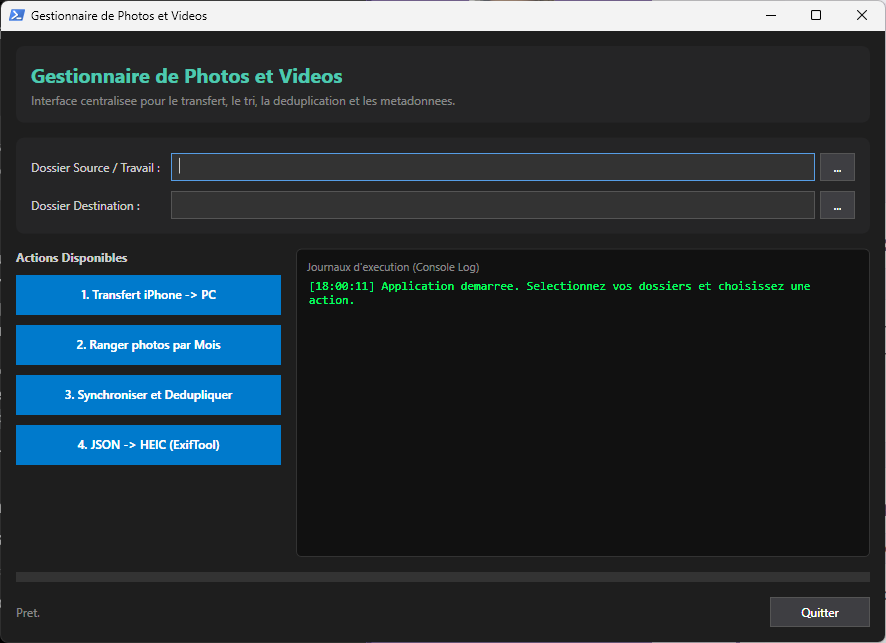

Certification Pix
Développement et évaluation des compétences numériques
Portfolio
Étudiante en informatique
Systèmes et réseaux
1re année de BTS SIO, option SISR
À propos de moi
Après plusieurs années dans la vente et le conseil en magasin/animalerie, j'ai choisi de me reconvertir dans l'informatique. J'ai obtenu le titre de Technicien d'assistance informatique (TAI) au GRETA, puis j'ai commencé un BTS SIO option SISR en formation à distance avec le CNED.
Mon objectif est de devenir ingénieure réseau. Je construis mes compétences en mettant en pratique ce que j'apprends, notamment sur mon propre environnement personnel.
Mon expérience de la relation client m'aide au quotidien à expliquer simplement des sujets techniques et à travailler avec des utilisateurs de tous niveaux.
3
Projets réalisés
1
Projet à venir
15
Outils et technologies
0
Certification obtenue
Formation et expériences
Septembre 2026 - en cours...
CNED à distance
Formation à distance axée sur l'administration réseau, la virtualisation, la cybersécurité et la gestion des systèmes.
Ajoute ici le détail : matières, projets, objectifs.
Décembre 2025 → Janvier 2026
SACPA, Chailly-en-Brie
Entretien, respect des consignes de sécurité et des règles d'hygiène.
Mars 2025 → Avril 2025
GHEF, Meaux
Déménagement et brassage réseau, diagnostic matériel, déploiement de 30 tablettes Galaxy, gestion d'inventaire.
Octobre 2024 → Obtenu en mai 2025
GRETA Lognes
Formation axée sur la maintenance, l'assistance utilisateur, la gestion de parc et les réseaux.
Plusieurs stages entre 2019 et 2022
Maxi Zoo / Botanic
Accueil client, conseil, gestion des stocks et inventaire.
Septembre 2020 → Obtenu en juin 2021
Lycée Jeanne Antide, Reignier-Ésery
Détail ici
En cours d'acquisition
 Windows Server
Windows Server Debian
Debian Ubuntu
Ubuntu Cisco IOS
Cisco IOS Active Directory
Active Directory DHCP et DNS
DHCP et DNS Sauvegarde
Sauvegarde GLPI
GLPI isilog
isilog Proxmox
Proxmox VBVirtualBox
VBVirtualBox VMWVMware
VMWVMware PSPowerShell
PSPowerShell BsBash
BsBashFormation complémentaire
Développement et évaluation des compétences numériques
Notions fondamentales de réseaux & adressage IP
Projets
Développement d'un outil d'archivage avec interface graphique (GUI) pour transférer, organiser et synchroniser automatiquement les photos d'un appareil iOS vers un stockage Windows.

Contexte : Ce projet est né du besoin de centraliser et d'archiver facilement les photos d'un iPhone sur un ordinateur Windows, tout en récupérant et réintégrant les métadonnées issues d'exports Google Photos.
Ce que j'ai fait : J'ai d'abord développé un premier script pour automatiser la copie et le classement des fichiers photo dans des dossiers structurés. J'ai ensuite ajouté la lecture automatique des fichiers JSON fournis par Google Photos afin d'adapter et réassocier les métadonnées aux images, puis de supprimer automatiquement les fichiers JSON inutiles. Enfin, j'ai conçu une interface graphique interactive en PowerShell pour rendre l'utilisation plus simple au quotidien.
Résultat : Un outil fonctionnel adapté à mon usage personnel qui automatise le tri, réintègre les métadonnées des photos et nettoie les fichiers temporaires sans intervention manuelle.
Ce que j'ai appris : Ce projet m'a permis de pratiquer la manipulation de fichiers et le traitement de données JSON en PowerShell et Bash, la gestion des politiques d'exécution sous Windows, ainsi que la création d'interfaces GUI. Il m'a également appris à identifier les limites d'un outil sur mesure et les pistes d'amélioration pour le rendre plus efficace.
Mise en place d'un serveur DNS local pour le filtrage du trafic réseau, la protection contre le suivi et l'optimisation des requêtes DNS du réseau.
Projets
Mise en place d'une maquette réseau virtuelle comprenant la configuration d'un domaine Active Directory, la gestion des utilisateurs et l'attribution dynamique d'adresses IP via DHCP.

Contexte : Travaux pratiques réalisés dans le cadre de ma formation TAI pour appréhender la gestion d'un réseau d'entreprise.
Ce que j'ai fait : Déploiement de machines virtuelles Windows Server et clients Windows. Configuration des rôles AD DS, création des unités d'organisation (OU) et paramétrage du service DHCP pour le segment réseau.
Résultat : Un environnement de test fonctionnel permettant de simuler l'intégration et la gestion d'un parc informatique.
Ce que j'ai appris : Les principes de l'annuaire Active Directory, la stratégie de nommage et l'interconnexion des services réseau essentiels.
Projets
Stage pratique de 6 semaines au sein du service informatique du GHEF (site de Meaux).
Contexte : L'objectif était de simplifier le quotidien des équipes sur le terrain dans certains secteurs du GHEF, en leur mettant à disposition des tablettes pour accéder plus rapidement à leurs outils et faciliter leur travail.
Ce que j'ai fait : J'ai préparé et configuré une trentaine de tablettes. Je me suis occupée de les sécuriser (application des règles de sécurité et blocage des accès non autorisés) puis de les paramétrer pour qu'elles soient prêtes à l'emploi dès leur remise aux agents.
Résultat : Un déploiement réussi de tablettes fonctionnelles et sécurisées, directement exploitables par le personnel pour leur faciliter la tâche au quotidien.
Ce que j'ai appris : La gestion et la sécurisation d'une flotte de terminaux Android en entreprise, le respect des besoins des utilisateurs finaux et l'importance de fournir des outils simples et prêts à l'emploi.
Rester informée
Sujet : Cybersécurité, actualités informatiques et matériel.
Pourquoi ce sujet : Ces domaines évoluent très rapidement avec l'apparition constante de nouvelles vulnérabilités. Il est essentiel pour une future administratrice réseau d'anticiper les risques, d'adopter les bonnes pratiques de sécurisation et de suivre l'évolution des outils.
Mes sources :
Mon outil de veille : J'utilise Feedly sur mobile pour centraliser automatiquement mes sources, trier les flux par catégories et consulter l'actualité tech au quotidien.
Échangeons ensemble
Description...